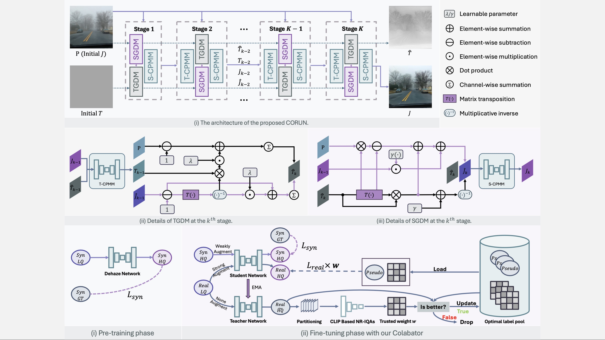
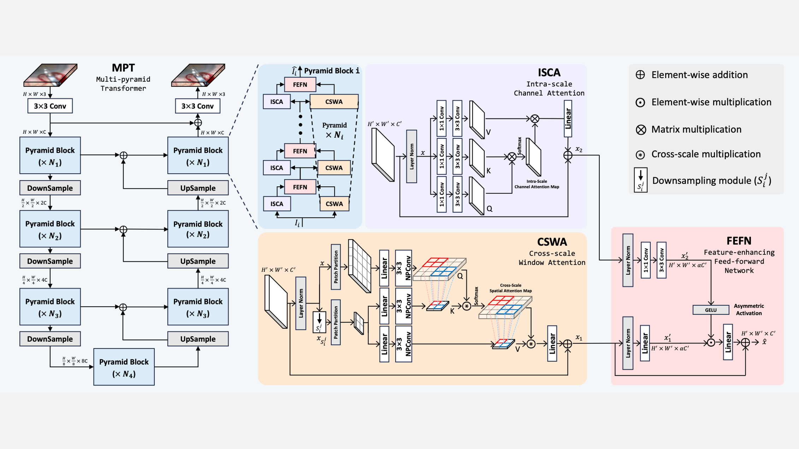
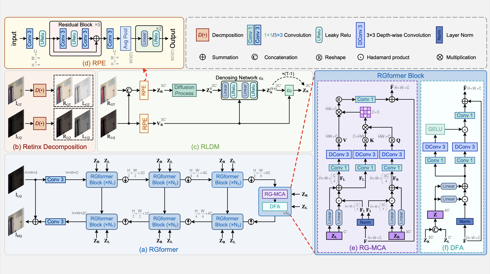
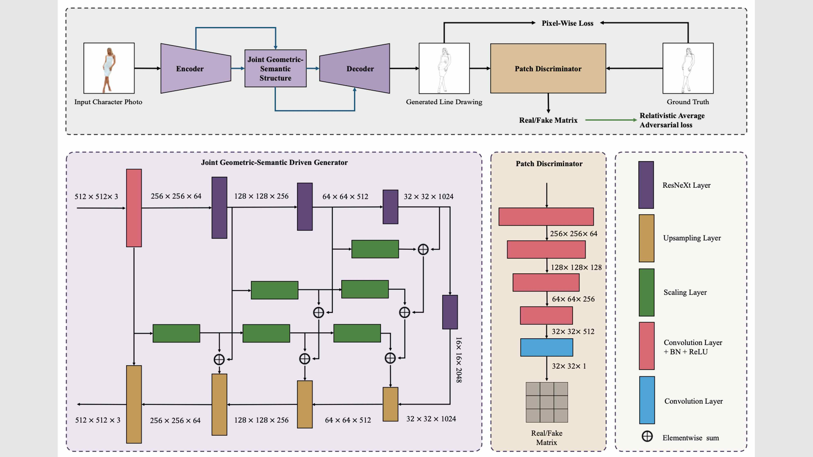
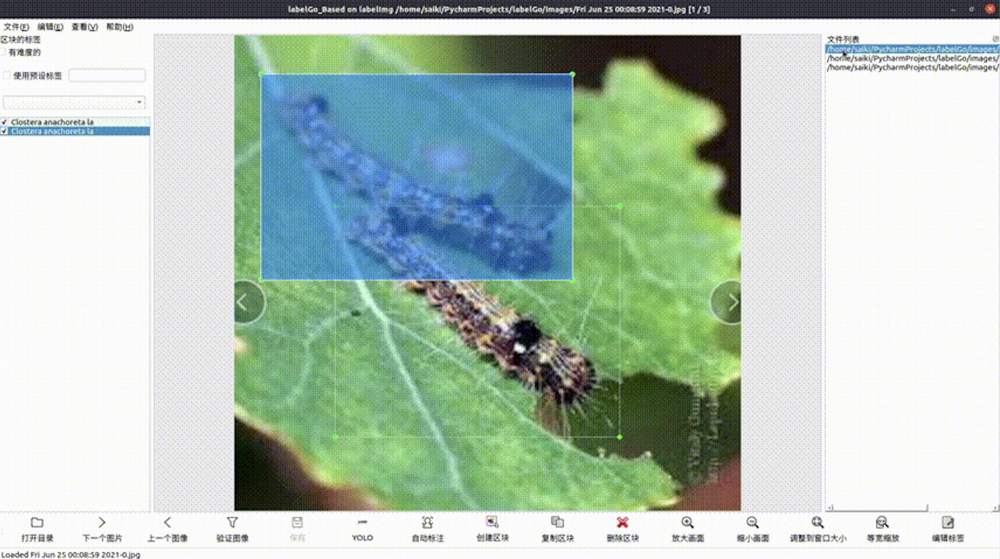
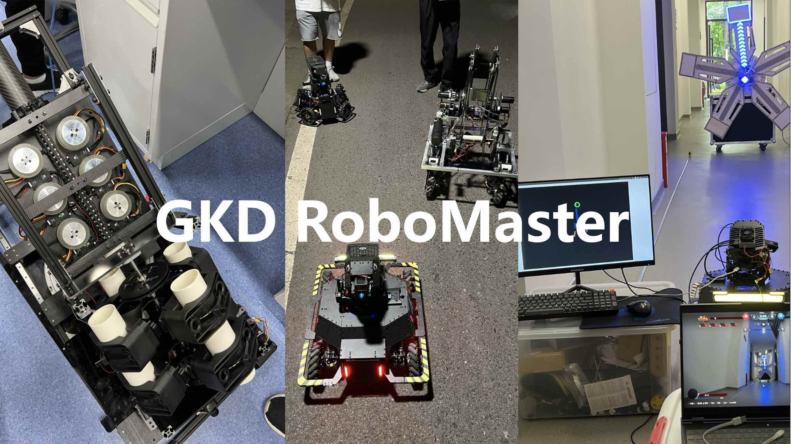
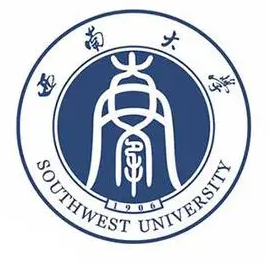
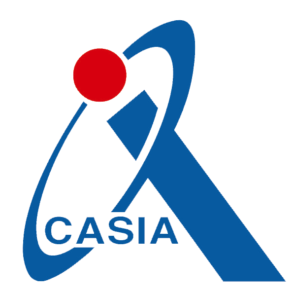
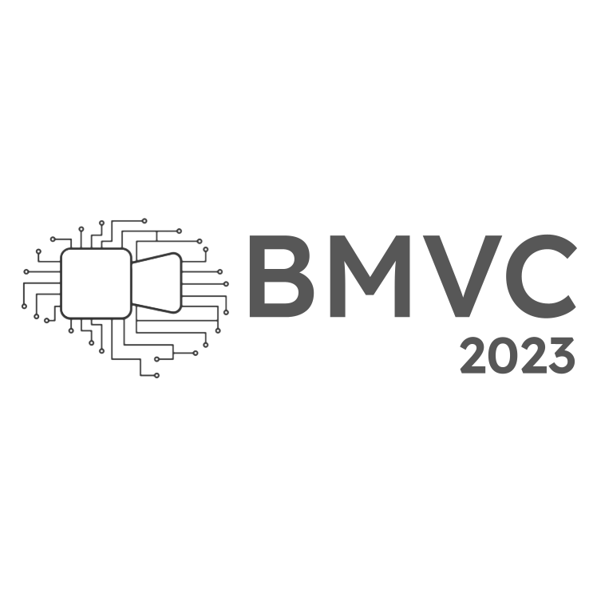

I will obtain a Bachelor's degree in Software Engineering from the School of Computer and Information Science, School of Software Engineering, Southwest University in June 2024, and pursue a Master's degree in Artificial Intelligence at the Institute of Data and Information Sciences, Tsinghua University.
My research interests include robotics, computer vision and digital art. Currently, I am engaged in research work related to low-level vision and endeavoring to make contributions in the fields of image enhancement and image restoration. Feel free to contact me by email if you are interested in discussing or collaborating with me.
Email: chengyufang.thu[at]gmail.com
Related Works
News
- [2023.09.29]I will be entering Tsinghua University as a master student in the fall of 2024!
- [2023.08.27]My team and I got the first prize in this year's Texas Instruments Cup 2023 National Undergraduate Electronic Design Contest!😎
- [2023.08.21]We are glad that our team won the first prize of both SocChina 2023 and China Software Cup 2023 in five days.😁
- [2023.06.25]I passed the CASIA summer school interview. Thanks to CASIA!
- [2023.06.25]I won the second prize in the 2023 China Robotics and Artificial Intelligence Competition.🎉
- [2023.06.14]I present my work at ICMR2023 in Thessaloniki, Greece
Thanks to everyone I met at the conference!
- [2023.04.20]I was recommended for the honor of Advanced Individual of Chongqing for Innovation Capacity in 2022-2023
- [2023.04.02]My first paper Joint Geometric-Semantic Driven Character Line Drawing Generation was very lucky to be accepted by ICMR2023. The camera-ready paper will be release soon.🥹
- [2022.12.07]Congratulations to my good friend Run-Ze Lin🎉, the code for the GHC LoongArch Porting and Optimisation project has been merged into the GHC and LLVM open source project mainline thanks to his work.
[GHC Merge Info][LLVM16 Release List][LLVM16 News]
Publication
(† Equal contribution, * Corresponding author)

Real-world Image Dehazing with Coherence-based Label Generator and Cooperative Unfolding Network[Paper][Code]
Chenyu Fang†, Chunming He†, Fengyang Xiao, Yulun Zhang*, Longxiang Tang, Yuelin Zhang, Kai Li, and Xiu Li*, arXiv 2024

A Unified Framework for Microscopy Defocus Deblur with Multi-Pyramid Transformer and Contrastive Learning[Paper][Code]
Yuelin Zhang, Pengyu Zheng, Wanquan Yan, Chengyu Fang, Shing Shin Cheng*, CVPR 2024

Reti-Diff: Illumination Degradation Image Restoration with Retinex-based Latent Diffusion Model[Paper][Code]
Chunming He†, Chenyu Fang†, Yulun Zhang*, Kai Li, Longxiang Tang, Chengyu You, Fengyang Xiao, Zhenhua Guo and Xiu Li*, arXiv 2023

Joint Geometric-Semantic Driven Character Line Drawing Generation[Paper][Code]
Chengyu Fang, Xianfeng Han*, ICMR 2023
Selected Projects
- ⭐️ Image Translation Based Character Line Drawing Generation | Jun. 2022 - Jun. 2023
Funded by National Training Program of Innovation and Entrepreneurship for Undergraduates
- ⭐ Intelligent Composite Robot for Disinfection and Handling of Complex Storage Situations | Jun. 2023 - Jun. 2024
Funded by National Training Program of Innovation and Entrepreneurship for Undergraduates
(Corporate proposition projects, Priority projects in key areas)

LabelGo - YOLOv5 Semi-automatic Annotation Tool
2021 | My open source project, 437 Star harvested.
Semi-automated image annotation using the YOLOv5 model.[Github]

Robomaster Robots development
Now | Developed with GKD Robotics Innovation Laboratory.
My team and I have completed the development of mechanical, electrical and vision algorithms for a variety of robots for the Robomaster robotics competition.[video]
Selected Awards and Honors
- 🌟 National Scholarship | 2023
- 🌟 National Scholarship | 2022
- 🌟 Xiaomi Special Scholarship | 2023
(7 people selected from across the university, funded by Xiaomi Group)
- 🌟 Southwest University Special Scholarship | 2023
(15 people selected from across the university)
- 🌟 Southwest University CIS @ Pisen Electronics Co. Ltd Scholarship | 2023
(5 people selected from across the school of computer science)
- 🌟 Southwest University CIS Yuhui Scholarship | 2023
(5 people selected from across the school of computer science)
- 🌟 Southwest University First Prize Scholarship ｜ 2021
- 🌟 Southwest University Outstanding Student Representative | 2023
(15 people selected from across the university)
- 🌟 Chongqing Advanced Individual for Innovation Capability | 2023
- 🌟 Chongqing Merit Student | 2024
- 🌟 Chongqing Outstanding Graduates | 2024
Competition is my life！😎
All of these competitions are recognised by the Chinese Ministry of Education as "high level academic competitions".🤫
- 🏅1st Prize of "TI Cup 2023 National Undergraduate Electronic Design Contest | Aug. 2023
- 🏅1st Prize of "China Software Cup" University Student Software Design Competition | Aug. 2023
A2-Porting Thunderbird 78 for the LoongArch Architecture
- 🏅1st Prize of "China University Student Embedded Chip and System Design Competition | Aug. 2023
- 🏅️1st Prize of "China Software Cup" University Student Software Design Competition | Aug. 2022
A2-Ghc LoongArch porting and performance optimisation
- 🏅1st Prize of 2022 China University Robot Competition ｜ Dec. 2022
RoboMaster 2022 University League Challenge - Infantry Robot Match
- 🏅1st Prize of 2023 China University Robot Competition ｜ Apr. 2023
RoboMaster 2023 University League Challenge - Infantry Robot Match
- 🥈2nd Prize in China Robotics and Artificial Intelligence Competition ｜ Jun. 2023
- 🥈2nd Prize of "China Software Cup" University Student Software Design Competition | Aug. 2022
A7-Face recognition application development based on SylixOS, a Chinese domestic embedded OS
- 🥈2nd Prize of 2022 China University Robot Competition ｜ Jun. 2022
RoboMaster 2022 University Technical Challenge - Standard Racing and Smart Firing
- 🥉3rd Prize in Chinese Collegiate Computing Competition ｜ Aug. 2023
Education Experience
Tsinghua University, China | Sept 2024 - Jun 2027
Institute of Data and Information
Master of Engineering in Artificial Intelligence

Southwest University, China | Sept 2020 - Jun 2024
School of Computer and Information Science & School of Software
B.Eng in Software Engineering
Academic Experience

Chinese Academy of Sciences, China | Jul 2023
Institute of Automation
Summer School Student (TOP100)
Tsinghua University, China | Jul 2023 - Present
Institute of Data and Information
Research Assistant Internship
Volunteer Experience

The 34th British Machine Vision Conference | May 2023 - Jun 2023
The British Machine Vision Association
Role: Reviewer
{kind=link}
{kind=link}
{kind=link}
{kind=link}
{kind=link}
{kind=link}